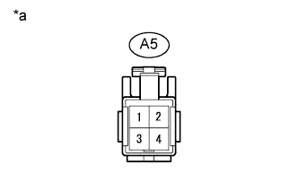
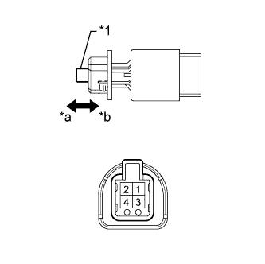

DTC P0571 Неисправность в цепи выключателя стоп-сигналов |
| Код DTC | Условие обнаружения DTC | Неисправный участок |
| P0571 | Напряжения на контактах ST1- и STP ECM остаются ниже 0,5 В в течение 1 секунды. |
|
| 1.ПРОВЕРЬТЕ ЖГУТ ПРОВОДОВ И РАЗЪЕМ (ВЫКЛЮЧАТЕЛЬ СТОП-СИГНАЛОВ – АККУМУЛЯТОРНАЯ БАТАРЕЯ) |
|  |
Отсоедините разъем A5 выключателя.
Измерьте напряжение в соответствии со значениями, приведенными в таблице.
| Контакты для подключения диагностического прибора | Положение переключателя | Заданные условия |
| A5-2 - масса | Всегда | 11 – 14 В |
| A5-4 - масса | Зажигание включено | 11 – 14 В |
| Замок зажигания в положении OFF (ВЫКЛ) | Менее 1 В |
| *a | Вид спереди разъема со стороны жгута проводов: (к выключателю стоп-сигналов в сборе) |
|
| ||||
| OK | |
| 2.ПРОВЕРЬТЕ ВЫКЛЮЧАТЕЛЬ СТОП-СИГНАЛОВ В СБОРЕ |
|  |
Снимите выключатель стоп-сигналов (Нажмите здесь).
Измерьте сопротивление в соответствии со значениями, приведенными в таблице ниже.
| Контакты для подключения диагностического прибора | Положение переключателя | Заданные условия |
| 1 - 2 | Не нажат | Менее 8,3 Ом |
| Нажат | 10 кОм или более | |
| 3 - 4 | Нажат | Менее 1,6 Ом |
| Не нажат | 10 кОм или более |
| *1 | Колпачок |
| *a | Не нажат |
| *b | Нажат |
|
| ||||
| OK | |
| 3.ПРОВЕРЬТЕ ЖГУТ ПРОВОДОВ И РАЗЪЕМ (ВЫКЛЮЧАТЕЛЬ СТОП-СИГНАЛОВ – ECM) |
Отсоедините разъем A5 выключателя.
Отсоедините разъемы G55*1 и G56*1 или G57*2 ECM.
Измерьте сопротивление в соответствии со значениями, приведенными в таблице ниже.
| Контакты для подключения диагностического прибора | Положение переключателя | Заданные условия |
| A5-3 - G55-8 (ST1-) | Всегда | Менее 1 Ом |
| A5-1 - G56-18 (STP) | ||
| A5-3 - масса | Всегда | 10 кОм или более |
| A5-1 - масса |
| Контакты для подключения диагностического прибора | Положение переключателя | Заданные условия |
| A5-3 - G57-9 (ST1-) | Всегда | Менее 1 Ом |
| A5-1 - G57-8 (STP) | ||
| A5-3 - масса | Всегда | 10 кОм или более |
| A5-1 - масса |
| Результат | Следующий шаг |
| OK (для моделей с 1GR-FE) | А |
| OK (для моделей с 1KD-FTV) | B |
| NG | C |
|
| ||||
|
| ||||
| А | ||
| ||